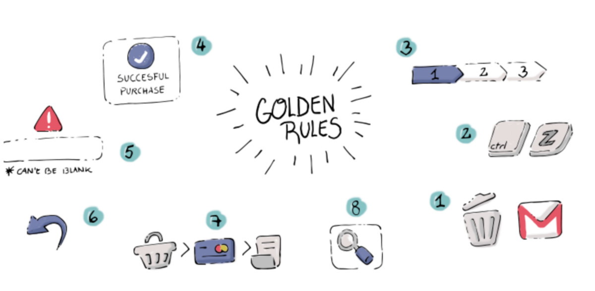
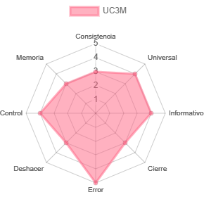
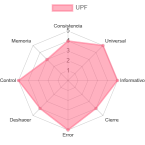
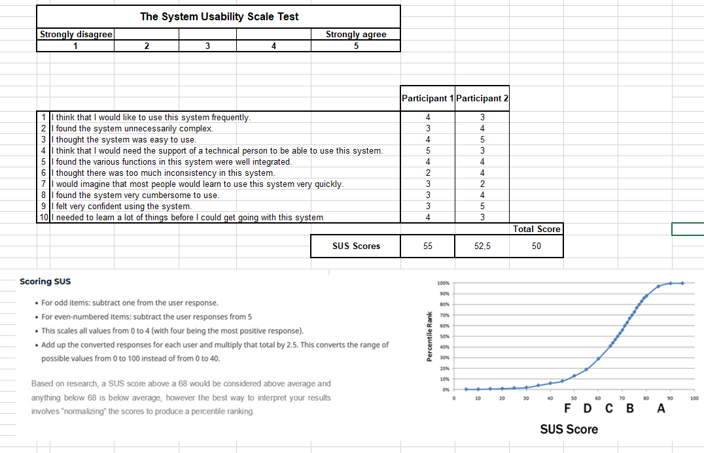

We have chosen the University of Pompeu Fabra and the Juan Carlos 3 to analyze them.But before start, let's define these rules:
UPF
UC3M
The Eight Golden Rules of Interface Design
Strive for consistency: which means to maintain the same graphic style in all your visual communication media. By “graphic style” we refer to being consistent in the colors, fonts, icon style, and image style that you use throughout your website.
Seek universal usability:In this way, Internet users interact with the site and achieve their objectives in a simple, intuitive, pleasant and safe way.On the two pages there are several sections where you can inquire and discover more about their activities and services
Offer informative feedback:For every user action, there should be an interface feedback. As we see in the photo, there is a section in which students can add suggestions to satisfy their experience at the university
Design dialogs to yield closure:Sequences of actions should be organized into groups with a beginning, middle, and end.
Prevent errors:As much as possible, design the interface so that users cannot make serious errors; for example, gray out menu items that are not appropriate and do not allow alphabetic characters in numeric entry fields
Permit easy reversal of action:As much as possible, actions should be reversible. With the university icons on the web, the user can return to the main page by simply clicking on the symbol
Keep users in control:Experienced users strongly desire the sense that they are in charge of the interface and that the interface responds to their actions. We can see short and clear information to help the reader in a simple and effective way
Reduce short-term memory load:Humans’ limited capacity for information processing in short-term memory.

Create a Kiviat diagram to explore the usability of the websites.
This are our diagramas:


The System Usability Scale Test
This is our result:
